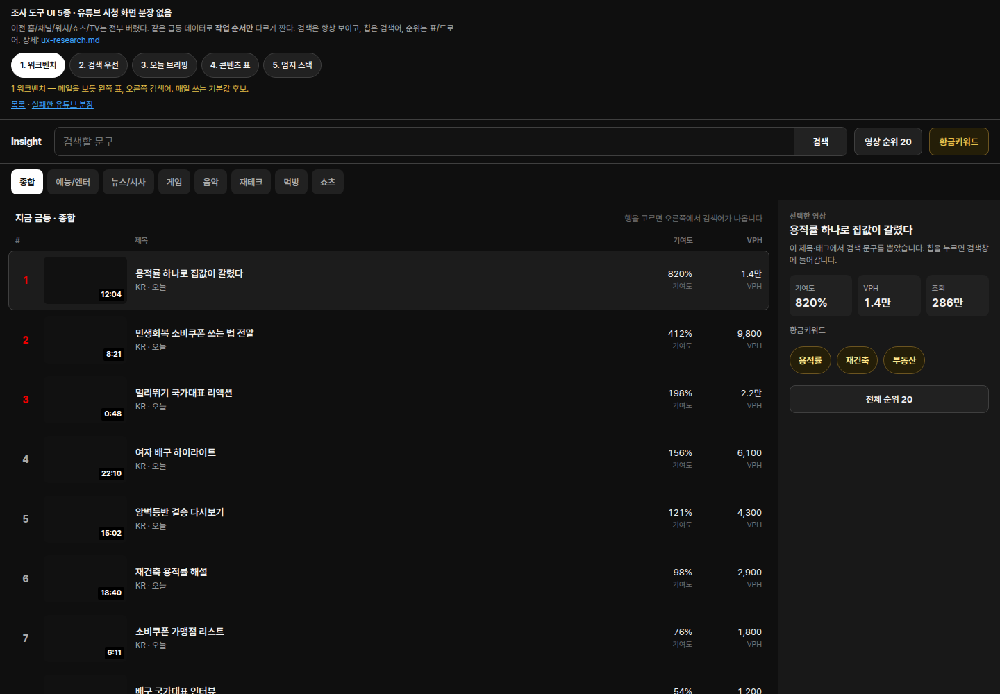
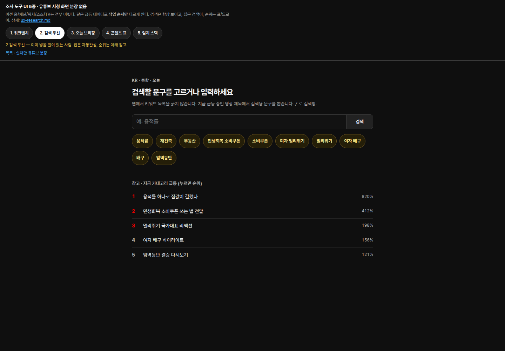
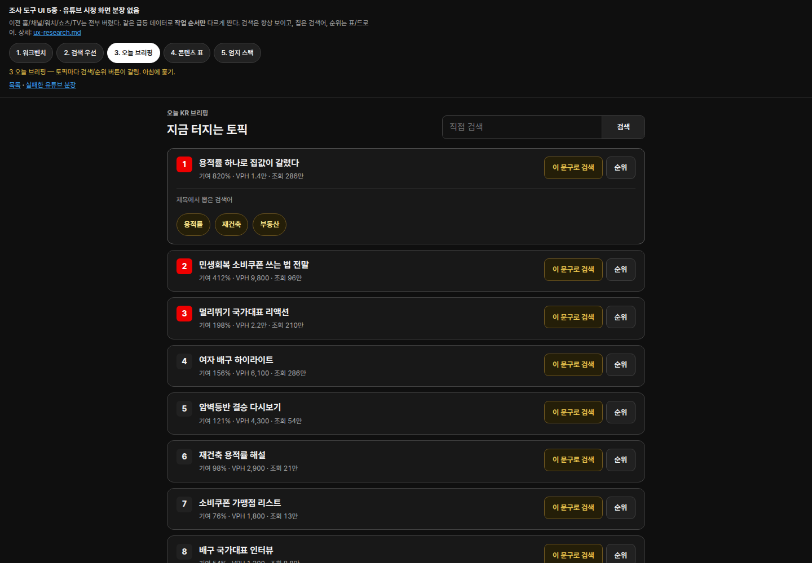
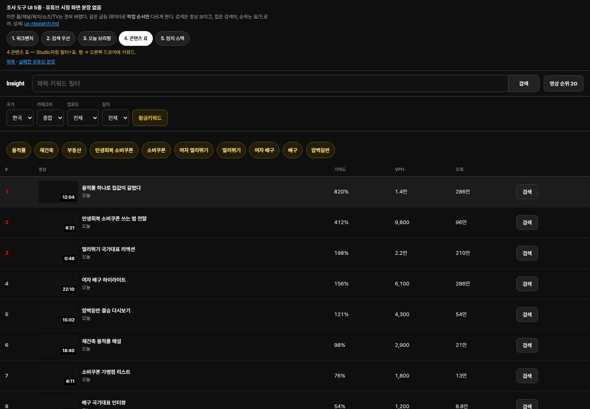
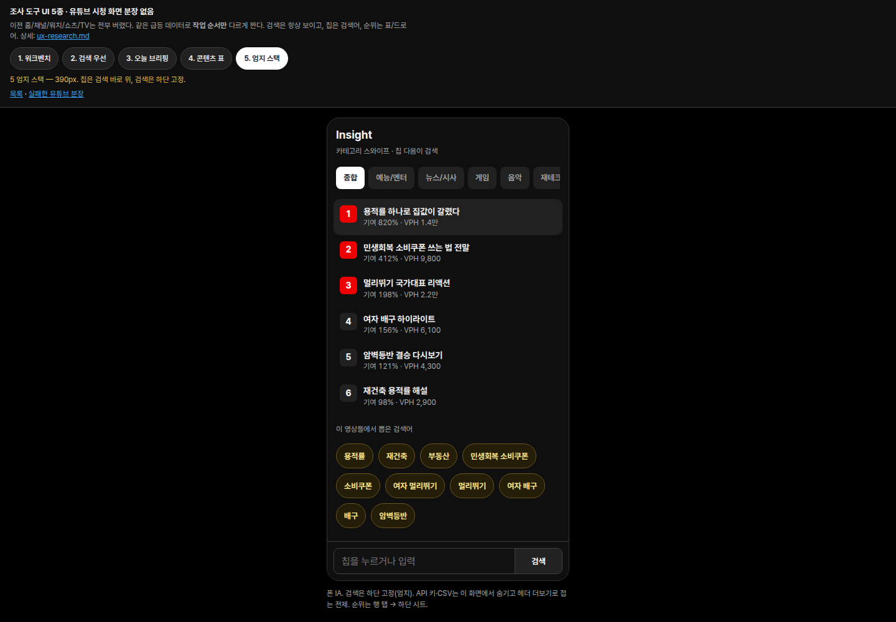

유튜브 시청 화면을 씌운 5종은 폐기 후보입니다. 지금은 조사 도구 5종에서 작업 순서를 고르세요. 왜 이전 것이 실패했는지: UX 재조사.





고정 CTA — 순위 버튼/표 = 카테고리 영상 Top 20. 황금키워드 버튼 = 칩으로 포커스. 칩 = 검색창 채움.
원칙 — 검색창은 항상 보임. 가짜 구독/좋아요/쇼츠 월 없음. 폰은 하단 검색.
로컬: ./run-local.sh docs/mockups/work-five.html